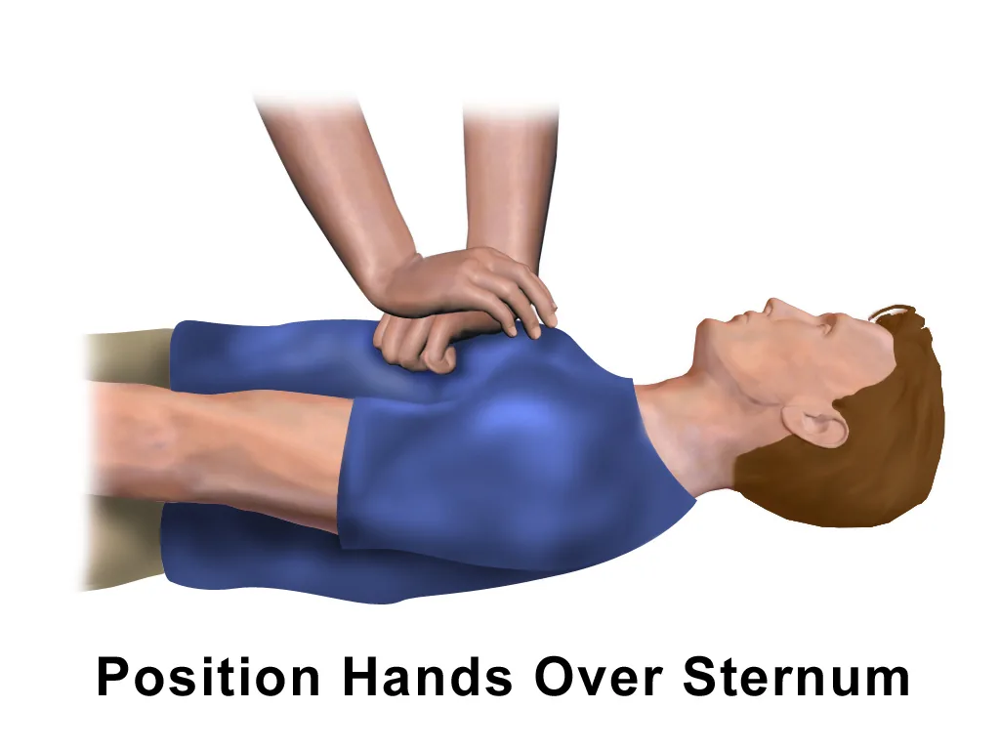
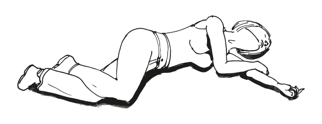
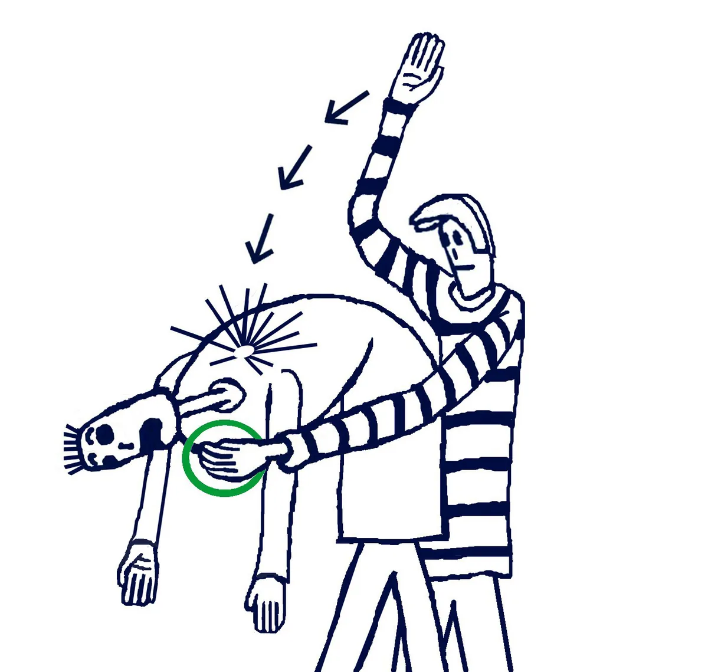
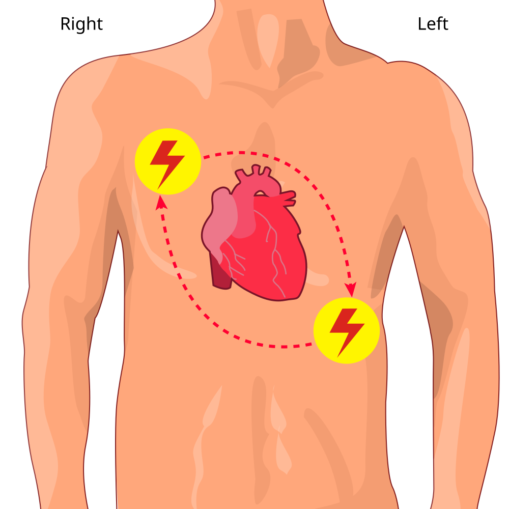
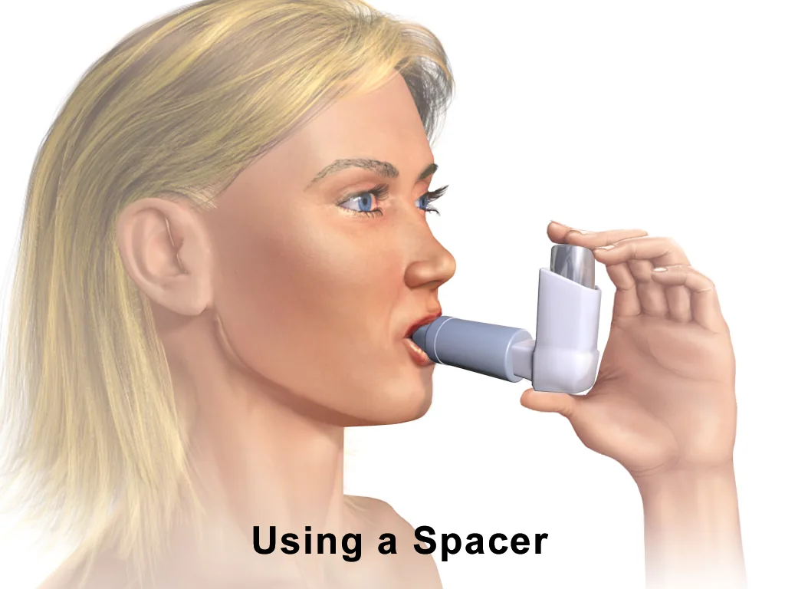
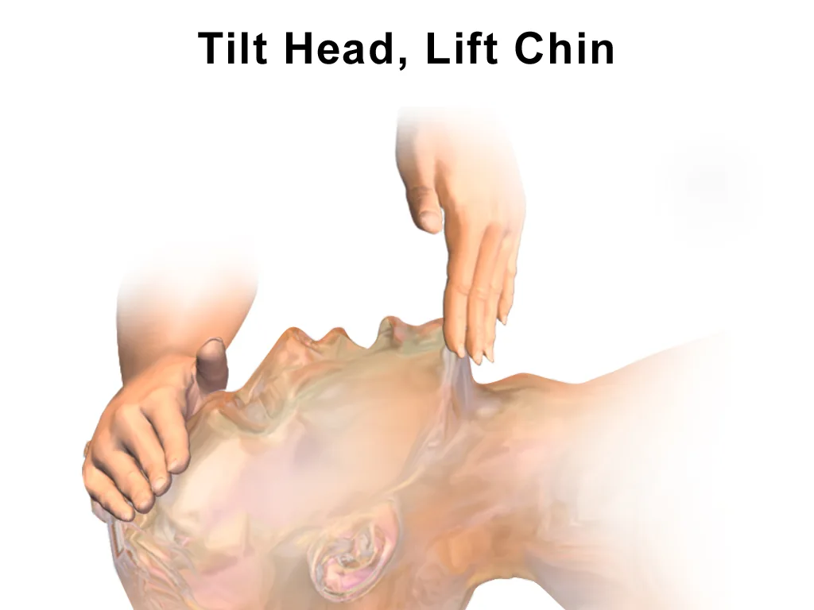
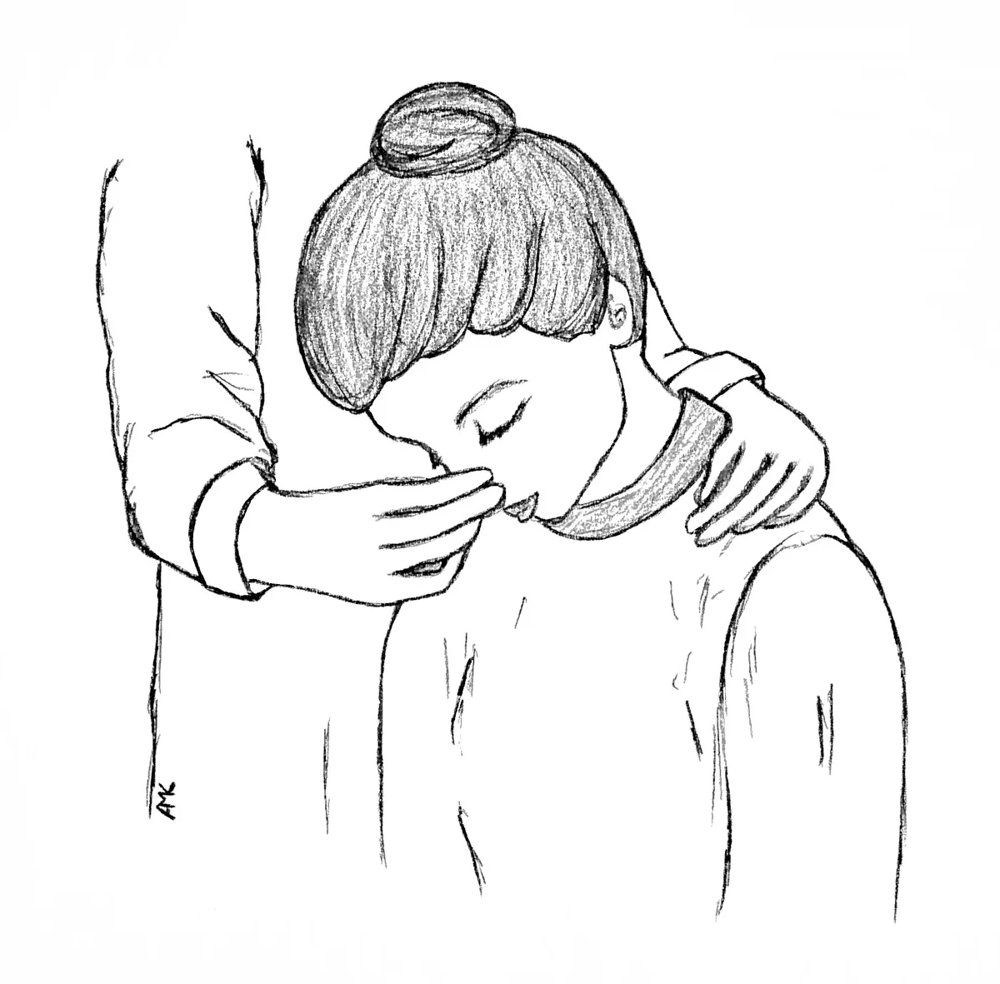

C: CPR. 30 chest compressions, then 2 breaths. Keep going. How to do CPR.
Wikimedia Commons diagrams
Each diagram below replaces the drawing in the steps listed under it. Wikimedia Commons is not peer reviewed: please judge each picture against current ANZCOR guidance and whether it suits a member of the public in Australia. 19 step rows.
Chest compressions on an adult

Check against: ANZCOR 6: heel of hand on the lower half of the breastbone, centre of the chest; arms straight; shoulders over the hands.
Visual check: Hands interlocked on the centre of the chest, arms straight down. Matches ANZCOR 6. The picture carries its own English text, "Position Hands Over Sternum". (Claude (AI), visual check against the ANZCOR step only. Not a clinical review.)
Steps where it replaces the drawing
Push hard and fast: 100 to 120 compressions a minute, almost 2 a second. Let the chest come all the way back up after each one.
If you can’t or won’t give breaths, keep doing compressions without stopping. Compressions alone still help.
If they stop responding, start CPR.
If they stop responding and aren’t breathing normally, start CPR.
If they stop responding and aren’t breathing normally, start CPR.
Not breathing normally: start CPR.
Watch closely. If they stop responding and aren’t breathing normally, start CPR. CPR won’t expose you to the venom.
If they stop responding and aren’t breathing normally, start CPR.
Reviewer: ☐ Approve for these steps ☐ Reject Notes: ____________________
Recovery position

Check against: ANZCOR 3: on the side, top leg bent at hip and knee, head tilted back with the mouth turned down.
Visual check: On the side, top leg bent forward at hip and knee, lower arm out in front. Matches ANZCOR 3; the head tilt is less obvious than in the drawing. (Claude (AI), visual check against the ANZCOR step only. Not a clinical review.)

Steps where it replaces the drawing
Unconscious but breathing: roll them onto their side and keep the airway clear.
Gently get them onto the ground and roll them onto their side, keeping the head tilted back so the airway stays open. Don’t leave them sitting in a chair or with their head between their knees.
Roll them onto their side when you can. When it stops, if they’re unresponsive but breathing, keep them in the recovery position and reassure them as they come round.
Reviewer: ☐ Approve for these steps ☐ Reject Notes: ____________________
Back blows for an adult

Check against: ANZCOR 4: up to 5 sharp back blows between the shoulder blades with the heel of the hand, person leaning forward.
Visual check: Person leaning well forward, chest supported, blow between the shoulder blades. Matches ANZCOR 4. Sketchy cartoon style, unlike the rest. (Claude (AI), visual check against the ANZCOR step only. Not a clinical review.)
_against_choking_for_adult_people.jpg){kind=link}
Steps where it replaces the drawing
Give up to 5 sharp back blows between the shoulder blades with the heel of your hand. Check after each one. Stop as soon as it clears.
Reviewer: ☐ Approve for these steps ☐ Reject Notes: ____________________
Where the AED pads go

Check against: ANZCOR 7: one pad on the upper right chest below the collarbone, one on the left side below the armpit; follow the AED's own pictures.
Visual check: One pad below the right collarbone, one on the left side below the armpit (anterolateral). Matches ANZCOR 7. (Claude (AI), visual check against the ANZCOR step only. Not a clinical review.)

Steps where it replaces the drawing
D: Defibrillation. Attach an AED (defibrillator) as soon as one arrives and follow its voice prompts.
Attach an AED as soon as one arrives and do what it says.
Reviewer: ☐ Approve for these steps ☐ Reject Notes: ____________________
Puffer with a spacer

Check against: National Asthma Council / ANZCOR 9.2.5: puffer through a spacer; 1 puff then 4 breaths, repeat.
Visual check: Puffer through a spacer. Matches the asthma step. Shows a small spacer; the dose (4 separate puffs) stays in the step text. (Claude (AI), visual check against the ANZCOR step only. Not a clinical review.)
.png){kind=link}
Steps where it replaces the drawing
If they have asthma, give their reliever puffer for breathing symptoms, after the adrenaline.
Give 4 separate puffs of a blue/grey reliever (like Ventolin or Asmol). Shake it, put 1 puff into a spacer, and have them take 4 breaths from the spacer. Repeat until 4 puffs are done. No spacer: use the puffer directly.
Reviewer: ☐ Approve for these steps ☐ Reject Notes: ____________________
Head tilt and chin lift

Check against: ANZCOR 4: head tilt and chin lift for adults; hand on forehead, fingertips under the bony part of the chin.
Visual check: One hand on the forehead, fingertips under the chin, labelled "Tilt Head, Lift Chin". Matches ANZCOR 4. Same Blausen series as the CPR picture; the skin is drawn see-through. (Claude (AI), visual check against the ANZCOR step only. Not a clinical review.)

Steps where it replaces the drawing
A: Airway. Open their mouth. If you can see something in it, roll them onto their side and remove it. Then tilt the head back gently to open the airway.
Reviewer: ☐ Approve for these steps ☐ Reject Notes: ____________________
Nosebleed: lean forward and pinch

Check against: ANZCOR 9.1.1: sit, lean forward, pinch the soft part of the nose for at least 10 minutes.
Visual check: Sitting, leaning forward, soft part of the nose pinched (here by a helper; the step text says to pinch it). Matches ANZCOR 9.1.1. Pencil sketch style. (Claude (AI), visual check against the ANZCOR step only. Not a clinical review.)

Steps where it replaces the drawing
Sit them up and lean them forward. Pinch the soft part of the nose, below the bony bridge, for at least 10 minutes (20 on a hot day or after exercise). Spit out blood rather than swallow it. Get medical help if it bleeds for more than 20 minutes.
Reviewer: ☐ Approve for these steps ☐ Reject Notes: ____________________
Rejected candidates
- File:CPR Adult Chest Compression Sternum.png: The hand rests along the middle of the breastbone. ANZCOR says the lower half, and the existing drawing says so. Not used.
- File:CPR Infant Chest Compression.png: Two fingers, with the baby’s head tilted back. ANZCOR keeps an infant’s head neutral, and the two-finger technique is itself open (F37). Not used.
- File:Tongue blocking airway.svg: Cross-section showing why the airway opens, with no hands. It shows why, not how; the drawing shows the hands. Not used.
- File:Identify the symptoms of a stroke using the FAST method.svg: A US FDA infographic. US FAST material ends with calling 911, not 000; the file was not downloaded to confirm its exact wording. Australia uses the Stroke Foundation’s F.A.S.T. with 000. Not used.
- File:AbdominalThrust HeimlichManoeuvre.svg: Abdominal thrusts (Heimlich). ANZCOR 4 uses back blows then chest thrusts; abdominal thrusts are not taught. Most choking images on Commons show this. Not used.
- File:Recovery position 02.svg: Marked CC0, but its source is a picture from a commercial website, so the CC0 claim is doubtful. Not used.
- File:Head-tilt-chin-lift-maneuver.jpg: Clear hands, but the face is drawn upside down from the rescuer’s view and is hard to read at phone size. The Blausen picture is used instead.
Gaps: no suitable Commons diagram
- Pressure immobilisation bandage and splint (snake, funnel-web): nothing suitable on Commons; images there show tourniquets.
- Chest thrusts for choking (ANZCOR style): Commons has abdominal thrusts, and one chest-thrust image copied from a website.
- Burns (cool running water 20 minutes), heat illness, poisoning, marine stings (vinegar), spider bites: no clear diagrams found.
- Infant back blows: none found.